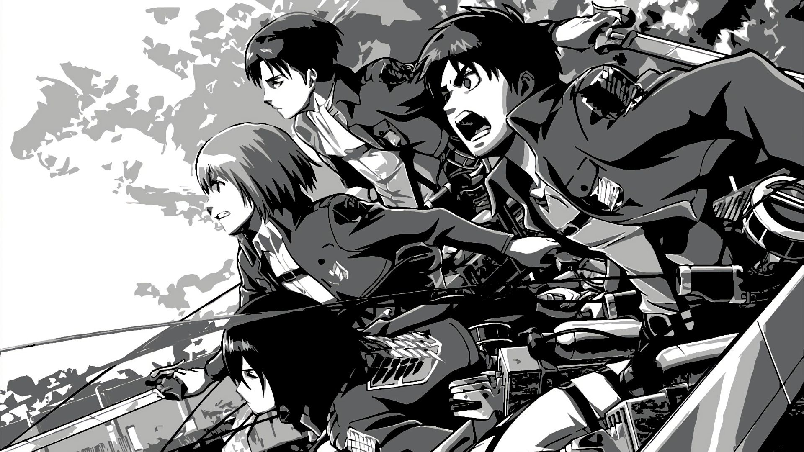
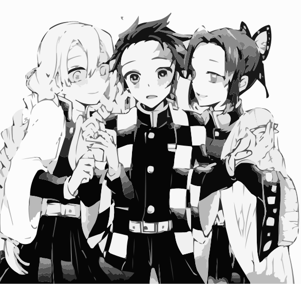
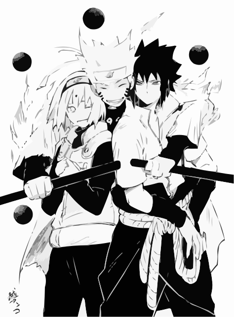

 Attack on titan est un shōnen manga qui a
été écrit et dessiné par Hajime Isayama en 2009. L'adaptation en
animation par Wit Studio à été diffusé en 2013 au Japon. Ce manga
raconte le combat mené par les humains pour reconquérir leur territoire
des titans. Un jour, un gigantesque titan apparaît et détruit l'un des
murs qui aident les humains à se protéger des titans. Quelques années
plus tard, Eren, Mikasa et Armin décident d'aller dans le bataillon
d'exploration pour essayer de découvrir l'origine des titans et de
reprendre leurs terres.
Attack on titan est un shōnen manga qui a
été écrit et dessiné par Hajime Isayama en 2009. L'adaptation en
animation par Wit Studio à été diffusé en 2013 au Japon. Ce manga
raconte le combat mené par les humains pour reconquérir leur territoire
des titans. Un jour, un gigantesque titan apparaît et détruit l'un des
murs qui aident les humains à se protéger des titans. Quelques années
plus tard, Eren, Mikasa et Armin décident d'aller dans le bataillon
d'exploration pour essayer de découvrir l'origine des titans et de
reprendre leurs terres.
 Eren Jäger est un membre du bataillon d'exploration et il est aussi le
protagoniste, puis l'antagoniste principal de la série. Il a vécu dans
le District de Shiganshina avec ses parents et Mikasa Ackerman jusqu'à
la chute du Mur Maria. Au cours de l'incident, Eren assiste, impuissant,
à la mort de sa mère par la main d'un Titan. Cet événement suscite chez
Eren une haine intense envers les Titans, ce dernier voulant les
éradiquer jusqu'au dernier. C'est pourquoi, il a décidié de rejoindre le
bataillon d'exploration. Le bataillon regroupe tous les soldats qui
veulent sortir des murs pour éliminer les titans pour en apprendre
davantage sur eux.
Eren Jäger est un membre du bataillon d'exploration et il est aussi le
protagoniste, puis l'antagoniste principal de la série. Il a vécu dans
le District de Shiganshina avec ses parents et Mikasa Ackerman jusqu'à
la chute du Mur Maria. Au cours de l'incident, Eren assiste, impuissant,
à la mort de sa mère par la main d'un Titan. Cet événement suscite chez
Eren une haine intense envers les Titans, ce dernier voulant les
éradiquer jusqu'au dernier. C'est pourquoi, il a décidié de rejoindre le
bataillon d'exploration. Le bataillon regroupe tous les soldats qui
veulent sortir des murs pour éliminer les titans pour en apprendre
davantage sur eux.
Mikasa est une amie d'enfance d'Eren Jäger, ainsi que l'une des
protagonistes principaux de la série. Après l'assassinat de ses parents
biologiques par des trafiquants d'êtres humains, elle est sauvée par
Eren et vit avec lui et ses parents, Grisha et Carla, jusqu'à la chute
du Mur Maria. Bien qu'elle désire seulement vivre paisiblement avec
Eren, Mikasa choisit de le suivre au sein de l'Armée Humaine. Lors de sa
formation dans la 104ème Brigade d'entraînement, elle excelle dans tous
les domaines et est classée 1ère de sa promotion. Elle rejoint par la
suite le Bataillon d'exploration, afin de veiller sur Eren.
 Armin est un ami d'enfance d'Eren Jäger et Mikasa Ackerman, et l'un des
protagonistes principaux de la série. Bien qu'il semble être parmi les
plus faibles physiquement de la 104ème Brigade d'entraînement, son
intelligence et son génie stratégique font de lui un atout inestimable,
surtout lorsqu'il est associé à Hansi Zoe. Durant la Bataille du
District de Shiganshina, il prit le pouvoir du Titan Colossal
Armin est un ami d'enfance d'Eren Jäger et Mikasa Ackerman, et l'un des
protagonistes principaux de la série. Bien qu'il semble être parmi les
plus faibles physiquement de la 104ème Brigade d'entraînement, son
intelligence et son génie stratégique font de lui un atout inestimable,
surtout lorsqu'il est associé à Hansi Zoe. Durant la Bataille du
District de Shiganshina, il prit le pouvoir du Titan Colossal
Livaï est connu pour être l'un des plus puissants soldats de son armée,
malgré sa personnalité rude et asociale il est respecté par ses
subordonnés et fait tout pour que ses hommes restent en vie.
Le pouvoir des titans est la capacité qui permet aux Eldiens de se transformer en l'un des 9 Titans Primordiaux. Contrairement aux Titans « purs », les Eldiens qui détiennent le Pouvoir des Titans, alors appelés Demis-Titans sont capables de contrôler leurs instincts et de conserver leur intelligence humaine. Les 9 Titans Primordiaux sont beaucoup plus puissants que les Titans classiques et souvent affichent des capacités qui leur sont propres, mais seulement 9 Eldiens peuvent détenir le Pouvoir des Titans en même temps. Cependant un détenteur dès lors de l'assimilation du pouvoir voit sa longévité réduire jusqu'à ce qu'il lui reste 13 ans de vie: c'est la malédiction d'Ymir (néanmoins l’œuvre ne nous montre aucun détenteur décédé de cette malédiction, Eren Kruger en montre juste des signes). Voici les 9 titans :